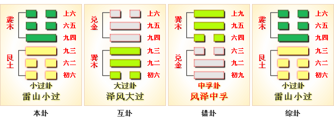
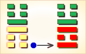
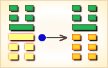
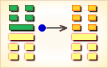
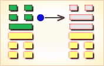
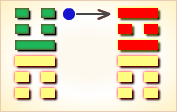

小过（xiǎo guò）是震上艮下的卦名，代号是1:4。
“过”（guò），从这儿到那儿，从此时到彼时：过江。
1:4卦的主卦是1卦艮卦，卦象是山，阳数是1；客卦是4卦震卦，卦象是雷，阳数是4。
“过”指经过，过去。“小”指小部分。小过，小小地过去了。
雷山小过（小过卦）行动有度。这个卦是异卦（下艮上震）相叠。 艮为山，震为雷，过山雷鸣，不可不畏惧。
阳为大，阴为小，卦外四阴超过中二阳，故称“小过”，小有越过。 图中，红色表示当位的爻，天蓝色表示不当位的爻，箭头表示有应。
小过卦由艮下震上组成。
卦辞的“小过：亨，利贞。可小事，不可大事。飞鸟遗之音，不宜上，宜下；大吉”， 第一句是说作为“亢龙有悔”和控制自己行为规范的《小过》 卦，它本身亨通，亦宜于贞正。 第二句是说，处在此时，只可办一件小事，却不宜去办大事。 最后一句是说，处在“亢龙有悔”之时，有若空中遗留下鸣声的飞鸟，它只宜于超下飞，不该向上飞；如能做到这一点，则很吉祥。
小过是1:4卦的卦名，1:4是小过卦的代号。
“过”（guò），从这儿到那儿，从此时到彼时：过江。
1:4卦的主卦是1卦艮卦，卦象是山，特性是被动和阻止；客卦是4卦震卦，卦象是雷，特性是运动而乏力。
客方像一阵阵响雷，主方像山一样屹立不动。山挡住了一些雷声，雷还是从山顶传出去了。 “过”指经过，过去。“小”指小部分。小过，小小地过去了。
起卦前必须客观地、全面地、准确地分析主方和客方的情况，必须至少符合下列条件之一，此卦才有参考价值：
1，客方的阳数是4。小过卦下部的三条爻是主卦，代表主方；上部的三条爻是客卦，代表客方。黑色的爻是当位的爻，灰色的爻是不当位的爻。
在主卦中，下爻不当位，中爻和上爻当位。不当位指阴阳属性位置不恰当，对主方不利；当位指阴阳属性位置恰当，对主方有利。主方应当变化主卦的下爻，保持中爻和上爻不变。下爻代表主方的行动，阴爻的表示消极被动，主方感到疲乏，不求发展，多保守，多防卫，甚至甘心落后，愿意接受衰落、老化的现实，这样在客方的攻势前，可能遭受损失。主方应当振作起来，扭转被动局面，维护自己的利益。中爻是阴爻，表示主方素质不佳，是促使主方积极进取的动力。上爻是阳爻，表示主方态度强硬，有利于制约客方，也对主方有利。因此，在主卦方面，可能发生变化的是下爻，而中爻与上爻将维持不变。
在客卦中，下爻表示客方积极主动，有可能损伤主方利益，对主方不利；中爻表示客方素质不佳，不可能给于主方有益的东西，对主方不利；上爻表示客方态度随和，主方可以制约客方，对主方有利。客方的状态决定于客方，主方不能改变客卦的爻，但是可以期待客卦中可能发生的变化，希望客卦的下爻与中爻发生变化，希望上爻不变。
上面提到的变化都是非常规变化，无法预测，只能分析各种变化的可能性；此外，还必须考虑常规变化。事物自身的发展变化是常规变化。用阳数表示，常规变化的规律是4、5、6、7、3、2、1和0。
主卦的阳数是1，已经是接近衰落的终点，就如同人到老年，激烈的活动做不了了，只能有限地做些舒缓柔和的运动，同时，应当意识到，进一步衰落就是这一圈螺旋形循环的终点。所以，主方应当变化主卦第一爻的状态，采取主动，阻止客方更强地发展，但是能够做的非常有限，只能尽量少地不让客方通过，阻挡不了的只好算了，这就是小过卦的中心思想。
图的底部是卦名和卦辞，卦辞简要地说明当前主方应当采取的策略。图右是爻辞，按从下到上的顺序，与爻一一对应，形象地比较具体地说明爻的含义。删去判断词，爻辞就是一首完整的围绕“小过”这个主题的散文诗。诗中用飞鸟比喻爱动的客方，又用人物比喻飞鸟。下面是其译文：
不好了，鸟飞过来了。
（挡住它！）祖父过去了，挡住祖母；
黄帝过去了，挡住大臣。
没有过去，防止它过去。
听任它飞过，或者杀死它，都不好。
没有过去，上去拦住它。
注意啊，一旦它飞走，就不好办了。
密密的云层，天不下雨，这是我们西部的郊野。
随时准备好，
先生用带绳的箭射下了鸟，在凹地里取得了它。
没有遇上，鸟飞过去了。
飞鸟离开了。啊，这将是一场灾难。
下面逐条说明卦爻辞。
〖卦辞原文〗亨，利贞；
可小事，不可大事；
飞鸟遗之音，不宜上，宜下，大吉。
〖译文〗顺利，利于坚持；可以做小事，不可以做大事；
飞鸟悲鸣遗留的声音不绝，不宜往上登高必遇险，宜下行，吉利。
〖解说〗主方消极被动，素质不佳，而态度强硬；
客方积极主动，素质也不佳，态度随和，
主方可以趁客方积极主动态度随和的机会发展自己，“亨”。
应当坚持下去，“利贞”。
主方应当明白自己素质不佳，“可小事，不可大事”。
飞鸟飞上天，了解天空情况，“飞鸟遗之音”是对形势的客卦估计，
卦辞建议主方“不宜上，宜下”，主方不应当只求向上发展，
只求扩充自己的利益，而应当向下观察、分析和解决现实中的问题。
如果主方取下而不取上，作小事，而不作大事，则对主方非常吉利。
〖原文〗飞鸟以凶。
〖译文〗飞鸟经过空中，预兆着凶险。
〖解说〗第一爻是主卦的下爻，
代表主方的行动，阴，表示主方消极被动，
比如说，防守、退却、不想冒险、
不想探索或开辟新的发展领域、只求保持现状，等等。
鸟飞走了，主方太消极被动，没有积极地阻挡鸟，
所以，这是凶险的。爻辞指明，消极被动是主方最严重的问题。
〖结构分析〗第一爻的位置是阳位，
这条爻是阴爻，阴爻在阳位，不当位，不过与四阳有应。
不当位表明主方消极被动，有可能让主方利益受到损失，
是潜在的对主方不利的因素；有应表明客方积极主动，
正好可以利用主方消极被动的机会取得发展，
这潜在因素成了真正的对主方不利的因素，所以爻辞说“凶”。
〖原文〗过其祖，遇其妣；不及其君，遇其臣，无咎。
〖译文〗错过了他的祖父，但遇着了他的祖母；
没有赶上他的君主，还是遇到他的臣僚，
虽有差迟，但非徒劳，无所怪罪。
〖解说〗第二爻是主卦的中爻，
代表主方的素质，阴，表示主方素质不佳，比如说，
资金缺乏、地位底下、实力薄弱、教育程度低，等等。
由于素质不佳，主方尽力而为，
“过其祖，遇其妣；不及其君，遇其臣”。
主方不应当受到怪罪，“无咎”。
“祖”（zǔ），父亲的上一辈：祖父。
“妣”（bǐ），原指母亲，后称已经死去的母亲：先妣。
〖结构分析〗第二爻的位置是阴位，
这条爻是阴爻，阴爻在阴位，当位，然而与五阴不有应。
当位表明主方素质不佳，促使主方寻求发展，
是潜在的对主方有利的因素；
不有应表明客方素质也不佳，
主方不可能从客方获得利益。
这潜在因素没有成为真正的对主方有利的因素。
由于这种潜在的有利因素存在，所以爻辞说“无咎”。
〖原文〗弗过防之，从或戕之，凶。
〖译文〗不要过分指责，但要防止他的错误发展，
如果听任放纵，反而害了他，必遭凶险。
〖解说〗第三爻是主卦的上爻，
代表主方的态度，阳，表示主方态度强硬。
主方态度强硬应当适当，“弗过防之”是适当的。
“从”是软弱的态度，“戕”是过分强硬的粗暴态度，
都不对，都有凶险，“从或戕之，凶。”
“戕”（qiāng），杀害：戕害。
〖结构分析〗第三爻的位置是阳位，
这条爻是阳爻，阳爻在阳位，当位，与六阴有应。
当位表明主方态度强硬，有可能制约客方，
是潜在的对主方有利的因素；
有应表明客方态度随和，可以接受主方制约，
这潜在因素成了真正的对主方有利的因素。
然而，主方素质不佳，力量薄弱，
强硬态度没有足够的力量支撑，所以爻辞说“凶”。
〖原文〗无咎，弗过遇之；往厉必戒，勿用永贞。
〖译文〗无所怪罪，没有过错，
不要指责，但要防止发生错误；
前去冒险，则必须立即加以警惕。
无须乎卜问往后的吉凶。
〖解说〗第四爻是客卦的下爻，代表客方的行动，
阳，表示客方积极主动地谋取和扩大自己的利益，
比如说，创新、创业、投资、进攻、求职、示爱，等等。
鸟比拟客方，鸟总想飞走，这不是主方所能决定的，
主方不应当受到怪罪，“无咎”。
鸟还没有飞走，主方可以去遇上它，
设法阻挡它，“弗过遇之”。
应当警惕，鸟一旦飞走了，再捕获就难了，“往厉必戒”。
主方应当改变消极被动，不能永久不变，“勿用永贞”。
〖结构分析〗第四爻的位置是阴位，
这条爻是阳爻，阳爻在阴位，不当位，不过与一阴有应。
不当位表明客方积极主动，有可能损害主方利益，
是潜在的对主方不利的因素；
有应表明主方消极被动，正好是客方发展的好机会，
这潜在因素成了真正的对主方不利的因素。
不过，这种情况是现实，不能怪罪主方，所以爻辞说“无咎”。
同时，主方应当极力改变这种不利状态，所以爻辞说“勿用永贞”。
〖原文〗密云不雨，自我西郊；公弋取彼在穴。
〖译文〗乌云密布而不下雨，乌云来自我方的西郊；
公用带绳子的箭射鸟，在坑穴中取得鸟。
〖解说〗第五爻是客卦的中爻，代表客方的素质，
阴，表示客方素质不佳，比如说，
资金缺乏、地位底下、实力薄弱、教育程度低，等等。
而与此同时，主方素质也不佳，主方并不能从客方获利。
主方须要等待时机，乘机发展自己，
目前只能“密云不雨，自我西郊”。
在周文王的时候，周国在西边，所以说，“自我西郊”。
如果机会到来，那时，
客方就像是落在地坑边上的小鸟，
主方就应当乘机获利，
就像是用带绳的箭射中小鸟，再从地坑中取出小鸟。
“弋”（yì），用带绳子的箭射鸟：弋获。
〖结构分析〗第五爻的位置是阳位，这条爻是阴爻，
阴爻在阳位，不当位，并且与二阴不有应。
不当位表明客方素质不佳，有可能向主方要求补益，
是潜在的对主方不利的因素；
不有应表明主方的素质也不佳，不可能满足客方需要，
这潜在因素没有成为真正的对主方不利的因素。
所以爻辞中没有判断辞。
〖原文〗弗遇过之；飞鸟离之，凶，是谓灾眚。
〖译文〗不加制之，因而犯下过失，
好比飞鸟钻入罗网，凶险啊，这叫做灾难。
〖解说〗第六爻是客卦的上爻，
代表客方的态度，阴，表示客方态度随和。
客方可能用随和态度，绕过主方监视，主方没有遇到客方，
客方就离开了，“弗遇过之；飞鸟离之”。
一旦客方飞走了，客方将获得发展空间，
对于主方来说，是凶险，“凶，是谓灾眚”。
“灾眚”（zāi shěng）灾殃，祸患。
〖结构分析〗第六爻的位置是阴位，
这条爻是阴爻，阴爻在阴位，当位，又与三阳有应。
当位表明客方态度随和，便于主方制约客方，
是潜在的对主方有利的因素；
有应表明主方态度强硬，正好可以制约客方，
这潜在因素成了真正的对主方有利的因素。
这是主方维护自己利益的好机会。
然而，主方素质不佳，实力薄弱，
强硬态度没有足够的力量支持；
与此相反，客方在积极主动地谋求发展，
其结果是客方的素质得到改善，素质改善首先表现在态度上，
态度将变得强硬，情况将反过来，对主方很不利，所以爻辞说“凶”。
《小过》一卦，粗粗一看，好像与《大过》一卦当属同类，所不同的不过是一大一小而已；所以，被人们误认为《小过》一卦是谈论“象征略为过分” ，《大过》一卦谈论的是“象征极为过分”。
实际上，则大谬不然。《大过》 卦谈的是因承受压力过重，想办法如何顶住、坚持，并最后战胜其压力的问题；而《小过》一卦则谈的是如何防止与回避因超越自己界线而带来的灾难问题。这是两种不同性质的东西。这一问题必须弄清楚。
还有《小过》一卦安排在《周易》临近末尾，还有它的特有的《乾》卦 “亢龙有悔”的结构成份。如果弄不清这一问题，也就无法正确地理解《小过》卦，同样也无法正确地理解一部《周易》。
《象》曰：行人路过独木桥，心内惶恐眼里瞧，爽利保你过得去，慢行一定不安牢。
小过。
六十四卦卦名之一。属于《周易》的“亢龙有悔”部分，
乃论述为防止越界而为自己规定的控制自己行为规范之卦。
飞鸟遗之音。
空中飞翔的鸟遗留下的声音。
飞鸟以凶。
飞行的鸟有凶险。
过其祖，遇其妣。
“过”，当超过讲。
“遇”，当接近讲。
“祖”，本指父之父；
“妣”（bǐ 比），古指亡故的母亲，有时未亡之母亦称“妣”。
此句若按“过其祖父，遇其母亲（不论亡与未亡）”讲，
这样排列于理甚为不通。
在古代，“祖”又有“始”的含义：新庙有“始庙”之称；
远祖庙亦有“始庙”之称 —— 由此推知，此处之“祖”当指亡父。
“过其祖，遇其妣” ，是说行为超过其父亲，所做之事接近其母亲。
不及其君。
“及”，赶上。“君”，君王。
此处特指尚处于己之上的君王。
“不及其君”，是说功业威望不要赶上其君王，犹功高盖主之谓。
遇其臣。
指遇到居于己之上的君王的侍臣。
弗过防之。
“弗”，没有。“防”，防备，
此句为在没有超过其君王之时就要防止超过，要防备不测。
从或戕之。
“从”，跟从，犹言距离太近。
“戕”（qiāng 枪），杀害。
此句是说其臣子的功德威信如果距离君王太近，
将要受到君王的杀害。
弗过遇之。
在功业没有超过其君王的情况下相遇。
往厉，必戒。
再往前走，必然凶厉，一定要警惕。
密云不雨，自我西郊。
此两句当指君王臣属寻衅。
公弋取彼在穴。
“弋”（yi衣），带有绳子的箭。
“穴”，洞、坑、孔；古也指土屋。
此句是说君侯为了防备不测，
当潜伏在洞穴中设防。亦可能还含有蹈晦之义。
弗遇过之。
此句是说君侯还没有遇到其君王之前其功业已超过了。
飞鸟离之。
有如飞鸟冲天而去。
小过，小者过而亨也。
过以利贞，与时行也。
柔得中，是以小事吉也。
刚失位而不中，是以不可大事也。
有飞鸟之象焉，飞鸟遗之音，
不宜上宜下大吉，上逆而下顺也。
山上有雷，小过；
君子以行过乎恭，丧过乎哀，用过乎俭。
飞鸟以凶，不可如何也。
不及其君，臣不可过也。
从或戕之，凶如何也？
弗过遇之，位不当也。
往厉必戒，终不可长也。
密云不雨，已上也。
弗遇过之，已亢也。
小过：亨利贞。可小事，不可大事。
飞鸟遗之音：不宜上，宜下。大吉。
译文：顺利正义。可以静谋，不可跳脱。
飞鸟的悲惨结局警示我们：
枪打出头鸟，嚣张飞腾不如脚踏实地。
只要明白了这个道理，就会是大吉。
初六，飞鸟以凶。
译文：天就像一张大网，
扑腾的飞鸟之辈岂能有所作为？
其嘚瑟 也只是作死而已！
我们不必在意，任其所为即可，其会自取灭亡的！
六二，过其祖，遇其妣；不及其君，遇其臣，无咎。
译文：贵人难遇上，但是可以遇上贵人的夫人。
主事者难遇上，但是可以遇上主事者的助手。
其实我们的命运并不差，可以成功的！
九三，弗过防之；从或戕之，凶。
译文：没有嚣张乖戾就最好，要谨慎预防。
嚣张乖戾了，就容易遭遇大危险。
九四，无咎，弗过遇之；往厉，必戒；勿用，永贞。
译文：没有危险。不嚣张乖戾的人遇上危险也不会有危险。
但是不要去攻击对手，攻击则凶，这一点必须注意。
任其所为就好，被动永远都是最吉利的结果。
六五，密云不雨，自我西郊；公弋取彼在穴。
译文：看那些嚣张乖戾的人吧，
平时张牙舞爪的，现在一个个终于都倒霉了。
上六，弗遇过之，飞鸟离之，凶；是谓灾眚。
译文：再也不会遇上那些嚣张乖戾讨厌的人，因为他们都倒霉了。
这就是嘚瑟的下场。世人要警醒啊！
艮下震上。
小过①：亨，利贞。可小事，不可大事。
飞鸟遗之音②，不宜上，宜下；大吉。
初六，飞鸟以凶③。
六二，过其祖，遇其妣④；不及其君⑤，遇其臣⑥，无咎。
九三，弗过防之⑦；从或戕之⑧，凶。
九四，无咎，弗过遇之⑨；往厉，必戒⑩；勿用，永贞。
六五，密云不雨，自我西郊⑪；公弋取彼在穴⑫。
上六，弗遇过之⑬，飞鸟离之⑭，凶；是谓灾眚⑮。
【注释】
① 小过，卦名。本卦为异卦相叠（艮下震上）。
下卦为艮，艮为山；上卦为震，震为雷。
人过山顶，天上鸣雷。危险垂临，不可不惧。所以卦名曰小过。
②《说卦》说：“震为鹄。”
（《释文》引荀爽《九家集解本》有此句，今本无。）
飞鸟过山，也是小过之卦象。
③ 凶，凶险。
④ 祖，祖父。妣，祖母。
⑤ 君，国君。
⑥ 臣，臣僚。
⑦ 弗，读为不。过，指责。
⑧ 从，借为纵，放纵，听任。戕（qiāng），杀害。
⑨ 咎，错误。
无咎，此处不是贞兆辞，犹言没有过错。遇，犹迎面遏止。
⑩ 厉，危险。往厉，犹言冒险。戒，警戒。
⑪ 自我西郊，来自我方的西郊。
⑫ 弋（yì 义），射鸟。彼，指代野兽。
⑬ 遇，遏止。过，过失，这里用如动词。
⑭ 离，借为罹，遭遇。之，指代罗网。
⑮ 眚，灾。与灾同义。

小过卦震上艮下，为兑宫游魂卦。占得此卦，举事有利，可以举小事，不可举大事。
阴顺阳困，柔软用事；谨慎自持，不宜急进。
得此卦者，诸事不利，宜行小事，不宜成大事，更防因自身的过失惹来是非争讼。
这个卦是异卦（下艮上震）相叠。
艮为山，震为雷，过山雷鸣，不可不畏惧。
阳为大，阴为小，
卦外四阴超过中二阳，故称“小过”，小有越过。
大象：山上有雷，雷声虽大但被山阻隔，
雷声减弱，即为「小过」。
运势：诸事不利，宜行小事，不宜做大事，更防因小过失造成惊动，惹来是非争讼。
小过：表示有志难伸、龙困浅滩，
像犯了一个小的过错般，而被处罚。
事事小有不顺，有被打压的迹象，
最忌冲动犯上，必因此而埋下祸端。
需沉潜、忍耐一段时间才能再有发挥的机运。
解释：稍有过失。
特性：谦虚，敬业，主动，积极，
反应快，严于律己，不断吸收新知识，学习新事物。
乐于助人，勇于认错。
运势：行事不如意，宜谨守，与六亲不和之象。又忠言逆耳犯上得罪人之事，反为害己之因，故凡诸事均有枝节、苦烦，不能达志耳。
初六。飞鸟以凶。
《象》曰：飞鸟以凶，不可如何也。
初六：飞鸟经过空中，预兆着凶险。
《象辞》说：飞鸟经过空中，预兆着凶险，这是无可奈何之事。
凶：得此爻者，不得天时，灾难突来。做官的有骤然取祸之忧。读书人则有一飞冲天之兆。

初六爻动变得第55卦：雷火丰。
这个卦是异卦（下离上震）相叠，
电闪雷鸣，成就巨大，喻达到顶峰，如日中天。
告戒：务必注意事物向相反方面发展，盛衰无常，不可不警惕。
六二。过其祖，遇其妣。不及其君，遇其臣，无咎。
《象》曰：不及其君，臣不可过也。
六二：错过了他的祖父，但遇着了他的祖母；没有赶上国君，还是遇着了臣僚。虽有差迟，但非徒劳，因而无灾难。
《象辞》说：没有赶上国君，因为臣子固不宜超越国君。
平：得此爻者，得贵人指引，谋望有成。做官的严于律己，恪守己职，则升迁有望。

六二爻动变得第32卦：雷风恒。
这个卦是异卦（下巽上震）相叠。
震为男、为雷；巽为女、为风。
震刚在上，巽柔在下。
刚上柔下，造化有常，相互助长。 阴阳相应，常情，故称为恒。
九三。弗过防之，从或戕之，凶。
《象》曰：从或戕之，凶如何也。
九三：不要过分指责，但要制止他的错误发展，如果听任放纵，反而害了他，必遭凶险。
《象辞》说：听任放纵反而害了他，凶险已极，不可言状。
凶：得此爻者，时运不济，谨防意外。做官的须防小人奸邪之辈所害。
时运：切勿躁进，自保免祸。 财运：外出经营，盗贼可怕。 家宅：谨防凶祸；小心冤家。 身体：刀伤凶险。

九三爻动变得第16卦：雷地豫。
这个卦是异卦（下坤上震）相叠，
坤为地，为顺；震为雷，为动。
雷依时出，预示大地回春。
因顺而动，和乐之源。此卦与谦卦互为综卦，交互作用。
九四。无咎，弗过遇之，往厉必戒。勿用，永贞。
《象》曰：弗过遇之，位不当也。往厉必戒，终不可长也。
九四：没有过错，不要指责他，但要防止发生错误。前去冒险，则必须立即加以警告，无须乎卜问往后的吉凶。
《象辞》说：不要过份指责，但要防止发生错误，因为九四阳爻处于阴位，像人处境不利，容易出错。前去冒险，必须加以警告，因为明知而故犯，只能加速自己的失败。
平：得此爻者，宜安常守职，不可妄动。
时运：观察情势，不可妄动。 财运：适可而止，切勿过贪。 家宅：安居为宜；勿急媒聘。 身体：静养心神。

九四爻动变得第15卦：地山谦。
这个卦是异卦（下艮上坤）相叠，
艮为山，坤为地。
地面有山，地卑（低）而山高，是为内高外低。
比喻功高不自居，名高不自誉，位高不自傲。这就是谦。
六五。密云不雨，自我西郊。公弋取彼在穴。
《象》曰：密云不雨，已上也。
六五：在我西郊的上空，云气密布，降雨在即。王公本是去射鸟，可是在洞穴捉到野兽。
《象辞》说：云气密布，降雨在即，因为雨云已聚集在空中。
平：得此爻者，不利谋事，守旧为佳。做官的有告休之危。
时运：平淡之时，难成大事。 财运：小利可得，不必多想。 家宅：小康之家；恐非正娶。 身体：针灸可治。

六五爻动变得第31卦：泽山咸。
这个卦是异卦（下艮上兑）相叠。
艮为山；泽为水。
兑柔在上，艮刚在下。
水向下渗，柔上而刚下，交相感应。感则成。
上六。弗遇过之，飞鸟离之，凶。是谓灾眚。
《象》曰：弗遇过之，已亢也。
上六：不加制之，因而犯下过失，好比飞鸟钻入罗网，凶险啊，这叫做灾难。。
《象辞》说：不加制止，因而犯下过失，正如上六阴爻位象所示，其人太猖狂了。
凶：得此爻者，时运不佳，不知退守，过刚则折。
时运：不知退守，自取其祸。 财运：时机不对，无得有失。 家宅：离散之象；小心奸计。 身体：凶险之病，速求良医。

上六爻动变得第56卦：火山旅。
这个卦是异卦（下艮上离）相叠。
此卦与丰卦相反，互为“综卦”。
山中燃火，烧而不止。
火势不停地向前蔓延，如同途中行人，急于赶路。因而称旅卦。